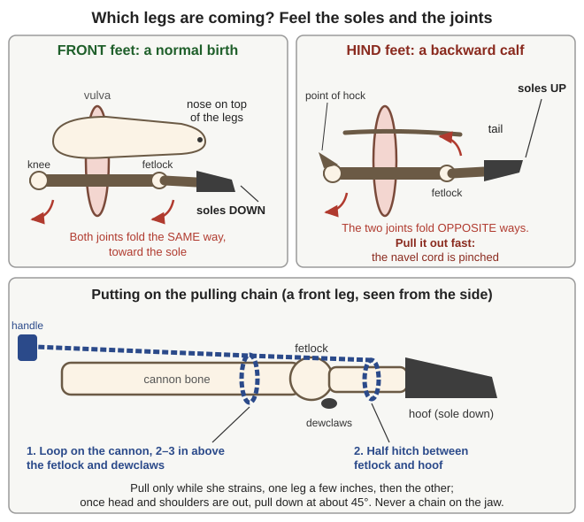
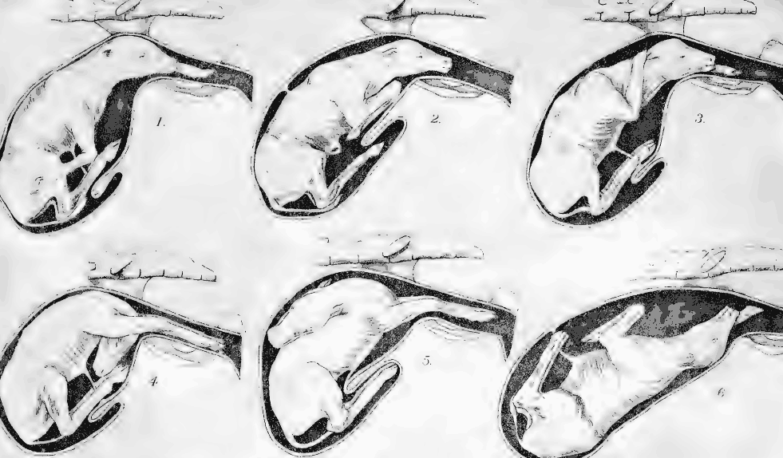
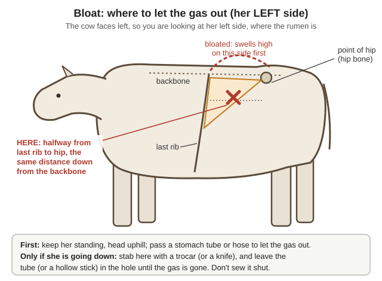
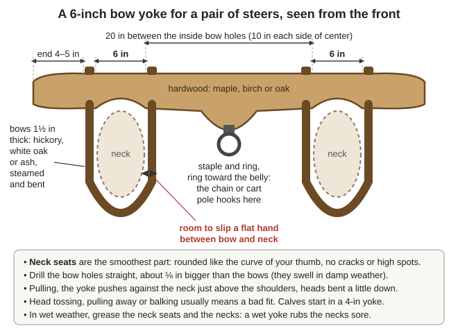
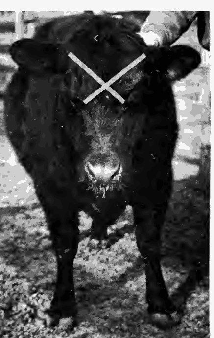
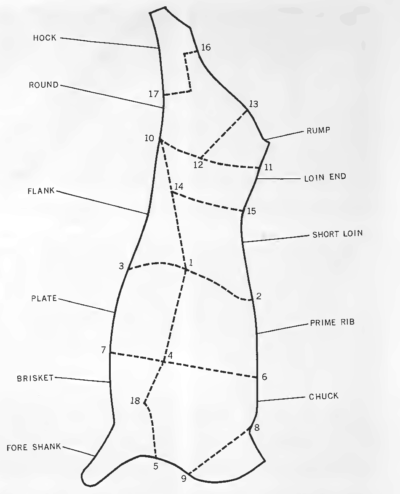

Guides › Animals · Emergency · Index A–Z
How to keep cattle with no feed store, no vet and no freezer: whether your ground can carry a cow, dairy, beef and dual-purpose breeds, fences, water and sheds for our wet winters, pasture, hay and roots, the plants that kill cattle here, a family milk cow's daily routine and drying her off, breeding with a bull, calving and when to help, calves, castration, sickness with no vet, training and working oxen, butchering a beef and keeping 400 lb of meat without a freezer, hides and tallow, predators, fire season, and a year's work in the valley. What to do with the milk is in the Milk, Butter & Cheese guide. The cattle books are in Animals\Cattle-Horses-Pigs, no-vet medicine in Animals\Veterinary, yokes in Horses-Draft-Animals\Draft-Harness, predators and fire in Animals\Planning-Predators-Toxic-Plants, poisonous plants in Wild-Plants, and tanning in Trapping.
The short version
- A cow needs real land. Even farmed hard, 2 acres is "the least possible area" for one cow (Keeping One Cow, p. 15). On unwatered valley ground plan 3–5 acres and about 3 tons of hay a year (rule of thumb); on brush or serpentine, keep goats.
- Cold rain is the enemy. Give a mud-free, three-sided shed (OSU EC1514, p. 7), and never work oxen in cold, wet weather: a wet yoke rubs necks raw (Animal Management, p. 312).
- Change feed slowly, over a week or more. Lush clover or alfalfa causes bloat: the left side swells drum-tight (EC1514, pp. 13–14).
- Keep pregnant cows away from ponderosa pine needles, never feed yew or hedge trimmings, and keep bracken and tansy ragwort out of pasture and hay (AIB 415, pp. 84, 113, 24, 105).
- Calving: the calf should come within about 2 hours of the water bag; pull only while she strains; a backward calf must come out fast (Raising Healthy Cattle, pp. 53, 56).
- Colostrum: about 10% of the calf's weight within 4 hours; after 24 hours it can't absorb it (EC1514, p. 5; Raising Healthy Cattle, p. 67).
- Brucellosis and TB reach people through raw milk and birth fluids: gloves at calvings; boil or pasteurize milk from untested cows (Raising Healthy Cattle, pp. 114, 117–118).
- A beef is about 400 lb of carcass. Butcher in cold weather, share it, and corn, salt, dry or pressure-can what can't be eaten in days (USDA FB 2209, pp. 19, 31–33).
Land. An Ottawa writer found "two acres of land is the least possible area that will provide cow-food for the entire year": an acre of clover and timothy for hay, an acre of green fodder and mangels, well manured (Keeping One Cow, p. 15). One family fed a cow from half an acre of clover cut three times plus an acre of garden crops (pp. 20–21); a good cow lived on about 1 acre of pasture until late July (p. 46). On rough range one cow needs from 1¼ acres in wet country to 25 acres in dry country, and cattle over a year eat twice what younger ones do (Raising Healthy Cattle, p. 37). Our valley-floor soils are "used mainly for irrigated pasture and hay" (Soil Survey, p. 9); serpentine grows poor, low-calcium forage and holds no stock pond (p. 49). Pasture browns from June to the October rains, so without irrigation plan 3–5 acres of decent grass per cow and calf, plus hay (rule of thumb).
Cow or goats? "From 6 to 8 goats can be kept upon the feed required for 1 cow," and a goat "can be kept where it would be impossible to keep a cow" (USDA FB 920, pp. 3, 25): brush and steep ground suit the Goats guide; grass, water and hay ground suit a cow. "Two to five families ... can readily unite in having one cow kept, dividing the milk and expenses" (Keeping One Cow, p. 11).
Which kind (OSU EC1514, pp. 3–6): a family milk cow bred every year, her heifers replacing her and her steers becoming beef or oxen (rule of thumb); beef cows with calves, which need the most land and year-round feed but little daily work; or weaned calves bought at about 7 months, grazed one season and butchered when the grass ends, the least land and commitment.
Buying. Beginners should buy "good, young, bred cows that have calved at least once," all from one reputable herd (EC1514, pp. 3–4). Pick a gentle cow not over 5 years old, with a large barrel, a big well-formed udder and teats set well apart (Keeping One Cow, p. 84); one with her second calf "you can keep her profitably for five years" (p. 17). Age by the front teeth: the first pair of big permanent incisors at 1½–2 years, the second at 2–2½, the third at 3–3½, the fourth at 4–5 (Raising Healthy Cattle, p. 78). Pass over an animal that stays thin on a good appetite (Johne's disease; EC1514, p. 13). Keep new cattle apart 3 weeks (p. 6), and test for TB and brucellosis if anyone still can (USDA FB 1470, p. 30).
Match breed and size to your feed and ground, and ask local ranchers (EC1514, p. 3); cattle already adapted to an area outlast imported ones, and gentle breeds suit a small place (Raising Healthy Cattle, pp. 41–42).
| Breed | Type | What the books say |
|---|---|---|
| Jersey | Milk | Smallest dairy breed (UNH, p. 5); richest milk, 5.2% fat against 3.6% for Holstein (FB 920, p. 6). The classic family cow: "We keep a good grade Jersey" (Keeping One Cow, p. 96). As oxen, Jerseys are "very aggressive and somewhat high-strung" (UNH, p. 5) |
| Guernsey, Ayrshire | Milk | Standard U.S. dairy breeds in 1930 (FB 1470, p. 16); not described on the drive. Medium-sized family cows (rule of thumb) |
| Holstein | Milk | Black-and-white, the most common; bull calves even-tempered but "grow very fast" and huge (UNH, p. 5). Most milk, least fat (FB 920, p. 6); eats the most (rule of thumb) |
| Brown Swiss | Milk, oxen | "Very docile," slow, heavy muscle, strong feet and legs; "excellent pullers" (UNH, p. 6) |
| Milking Shorthorn | Dual-purpose | Red, white or roan; even-tempered, slow-maturing (UNH, p. 5); a beef breed also milked (FB 1470, p. 17) |
| Devon, Red Poll | Dual-purpose | Beef breeds kept for milk (FB 1470, p. 17). Milking Devons: small, fast, smart, aggressive oxen, not for beginners (UNH, p. 6). Red Polls are hornless, no good in a yoke (p. 45) |
| Dexter | Small dual-purpose | A minor breed used for oxen (UNH, p. 6); small cattle for small ground (rule of thumb) |
| Hereford, Angus | Beef | Beef breeds are "thicker fleshed, fatten more readily," with less waste fat inside (USDA FB 2209, p. 5). Herefords also make oxen (UNH, p. 6) |
Crosses are fine: crossbred calves have "extra vigor" (EC1514, p. 3), and a beef × dairy cow milks enough for a family and raises a meatier calf (rule of thumb).
Fences (Raising Healthy Cattle, pp. 17–18): a board fence is the strongest, for corrals and handling pens; split rail lasts, "except that it generally cannot be built tall enough to be cattle proof"; a sapling fence (2–3-in saplings 6–8 ft long, crossed every 8–16 ft) takes moderate pressure; thorn brush is a stopgap; 3–6 strands of wire is "very cattle proof." Brace the corners of the outside fence and use electric wire for inside paddocks (EC1514, p. 8); electric fences "can be run off of solar charged batteries" (Raising Healthy Sheep, p. 131). In closed range you pay for damage if your cattle get out (EC1514, p. 8). Barbed wire, staples and roofing nails cause "hardware disease" (UNH, p. 15): pick up wire scraps, and cut baling wire with pliers in one cut, never a hatchet (USDA FB 1470, pp. 35–36).
Handling. A corral with a narrow alley and a squeeze chute or head catch makes every job safer; no electric prods (EC1514, p. 7). By hand, lift the tail near its base from one side, or pinch the nose between thumb and finger (Raising Healthy Cattle, pp. 19–25). Strap a kicker's hind legs above the hocks, and never strike a cow for kicking (FB 1470, p. 38).
Shelter. "Under most weather conditions, cattle do very well outside." In the Northwest they need "a mud-free area with protection from wind and rain" such as a three-sided shed, gutters on the roofs, and manure runoff kept out of creeks (EC1514, p. 7). Dry, draft-free, airy and sunny matters; temperature hardly does, and cows do best in the coldest weather and worst in summer heat (FB 1470, p. 17). In a shared open shed timid cows get pushed off the feed, so tie them at feeding and dehorn loose cows (p. 19). A tie stall can be 5 ft wide and 5 ft long with a 2-ft manger (Keeping One Cow, p. 21); a tied cow uses about 4 lb of straw bedding a day, 8 lb to soak up all the urine, 14 lb in a box stall (FB 1470, p. 24). Store hay apart from the animals: wet hay heats and can catch fire (EC1514, p. 7; PNW783, p. 8).
Water. Cattle drink 4–20 gallons a day, much more in heat (EC1514, p. 9); cows drank 80% more in hot summer than in cold winter, and cows watered at will milked better than cows watered once a day (FB 1470, pp. 26–27). Barrels, tires and tubs make troughs, never ones that held chemicals (EC1514, p. 7). Rats spread leptospirosis through water, and liver flukes live in snails on wet ground: fence off marshy spots (Raising Healthy Cattle, pp. 118, 164). Plan water for a power failure (PNW783, p. 7).
How much: 2–2.5% of body weight in dry feed a day, up to 3% for calves under 500 lb (UNH, p. 11); on poor, mature grass hay intake falls to 1.5% and the animal goes short (EC1514, p. 9). A 1,000-lb cow eats about 25 lb of hay a day (arithmetic).
Change feed slowly, over a week or more, or the rumen sours and bloats (EC1514, p. 13). Turn cattle onto spring grass a little at a time (UNH, p. 15) and give hungry stock dry hay before green feed (Animal Management, p. 316); young clover or alfalfa, "especially with the dew on," causes bloat (FB 1470, pp. 34–35). Don't graze below 3 inches, where the worms are (EC1514, p. 14).
Making hay (Raising Healthy Cattle, p. 37): cut just before the plants flower, after the dew is off; dry it on the ground 1–3 days, out of rain; stack it on dry ground near where you feed, peaked or covered so rain runs off, fenced from the cattle. Good hay is leafy with few seed heads; refuse moldy, dusty or hot bales (UNH, p. 12). Sun-bleached hay causes vitamin A shortage: watery eyes, rough coat, night blindness (EC1514, p. 8).
Roots and fodder with no feed store (Keeping One Cow): peas and oats sown early and cut green from about 6 weeks (p. 15); mangels, which keep until April if handled gently (p. 16); sugar beets, which don't flavor milk, while turnips do, so feed turnips only to a dry cow (pp. 18, 20); winter rye for spring (p. 21); and Jerusalem artichokes, a bushel a day in winter plus 8–10 lb of hay, about 1 ton of hay for 8 months (pp. 73–74). Cut up roots and apples: whole ones cause choke (Raising Healthy Cattle, p. 166). Feed at the same hours daily; cows mind a change in feeding more than in milking times (FB 1470, p. 9). Mature oxen and dry cows do well on hay or pasture alone (UNH, p. 12).
Salt and minerals. Salt always, about 1 ounce a day for a cow in milk, kept out of the rain (FB 1470, p. 27); trace-mineral salt where you can, and calcium to phosphorus near 1–2 to 1 (bone meal supplies both) (Raising Healthy Cattle, p. 30). Oregon is short of selenium: it causes white muscle disease in calves and retained afterbirths, mastitis and poor fertility in cows (OSU EM 9094, pp. 1, 3). Feed a selenium mineral in a covered feeder (p. 5), but too much is toxic (EC1514, p. 11); stock a year or more now (rule of thumb). Lush spring grass can bring grass tetany: add magnesium to the mineral (No Animal Doctor, p. 329). Without irrigation, put up hay for the dry summer as well as the wet winter (rule of thumb).
📷 Not sure what's growing in the pasture? Photograph it with the plant identifier (under Tools): it suggests a name and flags poisonous groups. Then check that name against this list.
Most poisonings happen when cattle are hungry, thirsty, moved or stressed, or turned out in early spring when poisonous plants are the only green ones; for most there is no treatment (AIB 415, p. 11). Walk a new paddock before turning cattle in. The "where" column is local knowledge (rule of thumb).
| Plant | Where | What happens |
|---|---|---|
| Ponderosa pine needles | Under pines, slash piles, windfalls | Abortion in the last third of pregnancy, mostly late fall to early spring; the afterbirth stays and some cows die. Dry or green needles and bark; some cedars and junipers too (AIB 415, pp. 84–85) |
| Bracken fern | Woods edges, burns, gravelly pasture | Builds up over 2–4 weeks: fever, bleeding, bloody urine; "losses have been high in the Pacific Coast States." Also in hay (pp. 23–25) |
| Tansy ragwort | Pastures and hayfields | Slow liver damage, signs 6 months later; worst for cattle and horses; also in hay (pp. 105–106; WSU sheet) |
| Water hemlock | Wet meadows, creeks, ditches | "The most violently toxic plant" in North America: convulsions, death within hours; roots turned up by ditch cleaning kill (pp. 108–109) |
| Poison hemlock | Ditches, waste ground | A little poisons; deformed calves if eaten on days 40–100 of pregnancy (p. 81) |
| Lupine | Dry hillsides | 1–12 lb kills a hungry cow; crooked calves if eaten on days 40–100 (p. 65); WSU says days 40–70 (p. 15) |
| Larkspur, death camas | Meadows, early spring | Larkspur kills suddenly, worst in early growth (pp. 57–58); death camas is among the first green plants (p. 34) |
| Oak | Oak woodland | Young leaves, buds and green acorns for 2–3 weeks wreck the kidneys; mature leaves are safer (pp. 78–79; WSU, p. 27) |
| Yew, garden yew | Shady creeks; hedges | Death "so rapid that signs ... may not have time to develop" (pp. 113–114); never feed trimmings (WSU, p. 2) |
| St. Johnswort ("Klamath weed") | Roadsides, pastures | Sunburned, peeling white skin; also from hay (p. 100) |
| Pigweed; drought-stressed or heavily manured crops | Gardens, corrals | Nitrate poisoning: gasping, brown or blue gums, sudden death (WSU, p. 4; Raising Healthy Cattle, pp. 171–172) |
📚 Go deeper: USDA AIB 415 — color photos, signs and prevention; the Goats guide covers garden poisons (azalea, oleander, cherry).
How much milk. Over 14,000 grade (mixed-breed) cows averaged 6,261 lb of milk a year (USDA FB 1470, p. 5): about 2,900 quarts, or 9–10 a day over a 10-month lactation (arithmetic). Family cows gave 10–20 quarts a day in full flow (Keeping One Cow, p. 19); one "fills a twelve-quart pail each night and morning," butter for six people (p. 20). Don't expect 30 quarts: "be quite satisfied if your cow gives half that" (p. 18). Fall-calving cows gave the most milk in a year; spring calvers slump in summer heat, flies and short pasture (FB 1470, p. 8). Milking three times a day gave about 12% more over 40 days and 18% over a year (p. 10).
Every milking:
Sharing with the calf. For the most milk, take the calf off after 2–3 days (Raising Healthy Cattle, p. 82); a calf left with the cow is "the way in which nature adjusts the supply to meet the demand" (FB 1470, p. 11). If you can't milk twice a day, let the calf run with her by day, pen it at night, and milk once in the morning: less milk, far less work (rule of thumb).
Drying off. The dry spell rests the udder, feeds the unborn calf and rebuilds the cow (FB 1470, p. 5): a month to six weeks for an ordinary cow in good flesh, two months or more for a heavy milker or a thin cow (p. 6). Sources differ: Keeping One Cow says 4–6 weeks (p. 91), "some eight weeks" (p. 108), and no more than 6 for a one-cow family (p. 49); plan on 6–8 weeks (our reading). How: skip one milking, then two, then three; when she is down to 6–8 lb (3–4 quarts) a day, stop, leave the udder alone, and cut her grain (FB 1470, p. 6). Watch for a hot, hard quarter (Raising Healthy Cattle, p. 87). July is a good time to dry her off, with pasture short and milk hard to keep (Keeping One Cow, p. 49); she should calve neither fat nor thin (EC1514, p. 3).
Heat comes every 21 days and lasts 12–18 hours (EC1514, p. 21): bellowing, restlessness, riding other cows or standing to be ridden, clear mucus. The egg comes about 11 hours after heat ends, so put her with the bull toward the end of heat, while she is gaining weight (Raising Healthy Cattle, pp. 42–43). Keep a cow in heat away from heavily pregnant cows, which get ridden and hurt (FB 1470, p. 6). Breed heifers at 18 months or more and growing; give a cow 2 months' rest after calving (Raising Healthy Cattle, p. 43), but rebreed within 3 months for a calf every 12 months (EC1514, p. 5). Pregnancy lasts 283 days, give or take 19 (p. 4). Due date: count back 3 months from breeding and add 10 days, so bred March 10 is due December 20 (FB 1470, p. 15). Write every breeding down. A short season of 45–60 days gives calves of one age (EC1514, p. 4).
The bull. One bull serves about 25 cows: own one, share one, or lease one tested free of the venereal diseases trich and vibrio; a shared bull brings disease, and "bulls also pose a safety risk" (EC1514, p. 4). One family gave its calf to the bull's owner for three seasons of service (Keeping One Cow, p. 46). Pick sound feet and legs, big testicles and a good mother. A bull is half of every calf and over the years up to 80% of the herd's blood, so avoid inbreeding, which brings dwarf and deformed calves (Raising Healthy Cattle, p. 41); swap bulls between neighborhoods every few years (rule of thumb). Many cows coming back into heat points to vibriosis (p. 118). Horned bulls are "decidedly more dangerous" (FB 1470, p. 38): never turn your back on a bull or handle one alone (rule of thumb). A skilled hand can feel a calf through the rectum at 60 days (Raising Healthy Cattle, p. 44); otherwise watch for the next heat 3 weeks after breeding (rule of thumb).
When to calve here. In western Oregon, late fall and winter calving brings mud, scours and pneumonia; spring calving puts cows on growing grass (EC1514, p. 4). Beef cows: March–April. The family cow: September–October, dry through the hot, smoky end of summer and milking all winter (FB 1470, p. 8; rule of thumb).
Signs and setting. 24–72 hours ahead the ligaments beside the tailhead loosen, the vulva swells, mucus shows and the udder fills (Raising Healthy Cattle, p. 53); close to it she may wander off, stop eating, and get up and down (Mississippi P2675, p. 2). Give a clean, dry, well-bedded pen in wet weather, keep children and dogs away (FB 1470, pp. 7, 32), and check at least every 3 hours (Mississippi, p. 2). Have lubricant, shoulder-length sleeves, soap, warm water, towels, and obstetric (OB) chains or soft ropes with handles (p. 5). Wear gloves: brucellosis and other birth infections reach people (Raising Healthy Cattle, pp. 54, 118).
Stages: getting ready, 2–6 hours, contractions 15 minutes apart, then the water bag; delivery, 30–60 minutes, heifers longer; afterbirth, 2–12 hours (Nebraska EC1907, pp. 2–3; Mississippi, p. 2). Help when there is no calf 2 hours after the water bag (Raising Healthy Cattle, p. 53), after 30 minutes of straining with no progress (Mississippi, p. 5), or sooner if the legs look wrong or she is worn out; Nebraska allows heifers 2–3 hours and cows 1–2 (p. 3).
Helping (Nebraska, pp. 3–4; Mississippi, pp. 6–7; FB 1470, p. 32):

Front or hind? Feel the soles and the two joints; then two loops of chain on each leg (Mississippi, pp. 6–7; Nebraska, p. 3) (a diagram drawn for this guide).Wrong positions, about 5% of calves (Nebraska, p. 2; Raising Healthy Cattle, pp. 55–58; Mississippi, pp. 4–5). Push the calf back between contractions, and cup each hoof in your hand as you bring it up, so it can't tear the womb.

Wrong positions: 1 one leg back, 2 knees bent, 3 leg over the neck, 4 head down, 5 head back, 6 upside down (Diseases of Cattle, pp. 237, 239).The first hours:
📚 Go deeper: Raising Healthy Cattle, pp. 52–65 — positions with drawings, prolapse, milk fever; Nebraska EC1907 and Mississippi P2675 — stages, positions, chains.
On the cow, beef calves nurse until 7–8 months (EC1514, p. 5); wean across a fence with a couple of hot wires, so cow and calf still see and hear each other (p. 6). By bucket: take the calf off after colostrum and feed whole milk at 4–5% of its weight twice a day (Raising Healthy Cattle, p. 68), 2–4 quarts at 101–105 °F (OSU EM 9280, p. 2). Teach it to drink by letting it suck your fingers as you lower its nose into the pail (Keeping One Cow, pp. 16–17). Offer a little grain from 2–4 weeks and hay from 4–5 weeks; wean when it eats 1 lb of grain a day, at 6–8 weeks (Raising Healthy Cattle, pp. 68, 71), or 8–14 weeks (UNH, p. 11). Always clean water, scalded buckets, and a mineral block from 3 months. House each calf in 18 sq ft, or a 4×8-ft hutch facing the sun with a small yard (Raising Healthy Cattle, p. 70), on deep dry straw with fresh air but no drafts; ammonia smell at calf height means new bedding (EM 9280, p. 2). Don't let calves suck each other: it brings mastitis later (Raising Healthy Cattle, p. 88).
Scours (diarrhea) kill more calves than anything else (Raising Healthy Cattle, p. 68). Mix 2 liters (about 2 quarts) of water, 1 teaspoon of salt and 2 teaspoons of baking soda; give 1–2 liters 2–3 times a day, by tube if the calf is too weak (p. 69). Keep feeding milk and give the electrolyte between feeds, never mixed in (EM 9280, p. 2); Raising Healthy Cattle says stop milk 24–48 hours, but follow OSU's newer advice. A calf that won't drink, can't stand or runs over 104 °F needs skilled help (same page). Prevent scours with colostrum, dry pens and sick calves kept apart (Raising Healthy Cattle, p. 70). Most Northwest calves need a selenium shot at birth, label dose only; while vaccines last, give a 7- or 8-way clostridial vaccine with tetanus at 2–3 months, a booster 3–6 weeks later and again at 6 months (EC1514, p. 11). One-cow families once sold the calf at 4 weeks (Keeping One Cow, p. 17); now keep heifers to replace the cow and raise steers for beef or a team (rule of thumb).
Steers are safer, easier to handle and gain faster than bulls (No Animal Doctor, p. 187). When: beef calves as young as you can, from a few days to 3 months (Raising Healthy Cattle, p. 73), or 2–3 months (No Animal Doctor, p. 187); future oxen at 6 months to 1 year, so they grow a wider head and stronger horns first (UNH, p. 20). Very young castration brings more urinary stones later (No Animal Doctor, p. 187). Pick cool weather out of fly season, after a clostridial and tetanus shot if you have one (UNH, p. 20; Raising Healthy Cattle, p. 73).
The knife (No Animal Doctor, pp. 188–189; Raising Healthy Cattle, pp. 73–74):
Burdizzo (crushing clamp): no wound. Crush each cord separately, twice, at different heights, never across both at one level, or the scrotum dies (Raising Healthy Cattle, p. 74; No Animal Doctor, pp. 187–188). Rubber ring: only young calves with small testicles, at 1–2 months (UNH, p. 20); "less preferable" where tetanus is about (No Animal Doctor, p. 189). Pain relief such as meloxicam needs a vet's prescription (EM 9280, p. 2).
Dehorning: a hot iron before 4 months (Raising Healthy Cattle, p. 75); caustic paste works only in the first 10 days and runs into eyes in rain (p. 76), so use the iron in our wet winters. On older cattle saw the horn off close, taking a ring of skin or it regrows, dress with pine tar, stop bleeding with a string twisted around the stubs for about 12 hours, and do it late fall to early spring, when there are no flies (FB 1470, p. 39). Leave horns on oxen (UNH, p. 7) and on cows that must guard calves: some "let the horns grow so the animals will be able to protect themselves" (Raising Healthy Cattle, p. 75).
Marking: ear tags, a neck strap with a tag, or a tattoo; slitting ears is "a cruel practice" (FB 1470, pp. 15–16); a red-hot brand held about 3 seconds on dry hide (Raising Healthy Cattle, p. 77). Oregon law: a brand inspection to move cattle, except calves under 30 days (EM 9280, p. 1). Brands and tags also bring evacuated cattle home after a fire (PNW783, p. 7).
Know normal (No Animal Doctor, pp. 66–67): 101.5 °F over a year old, 102.5 °F under, and worry over 103 °F (UNH, p. 13); pulse about 50 in adults and 125 in newborns, felt in the groove under the tail; about 16 breaths a minute. A fist pressed into the left flank should feel the rumen roll 2–3 times a minute (Raising Healthy Cattle, p. 106). A healthy animal is alert, eats, chews its cud, drinks, and has a shiny coat, normal manure and an easy walk (UNH, p. 13). A drooling, bellowing cow may have rabies: keep your hands out of her mouth (Raising Healthy Cattle, p. 127).
| Problem | Signs | What to do |
|---|---|---|
| Bloat | Left side high and drum-tight, then both; hard breathing; after lush legumes or grain | Keep her up, head uphill; pass a stomach tube or hose (No Animal Doctor, p. 205). Frothy bloat: vegetable oil by tube, about a pint (Raising Healthy Cattle, pp. 169–170); No Animal Doctor gives 1–4 liters every 2–4 hours (p. 207). Going down: puncture the left flank (the picture) |
| Choke | Drools, coughs, stops eating; a lump on the left of the neck | Work the lump up by hand; a pint of raw linseed or olive oil helps (FB 1470, p. 34). A stiff tube can tear the gullet (Raising Healthy Cattle, p. 166) |
| Hardware disease | Off feed, arched back, a grunt at each step | Keep her quiet, little bulky feed; a magnet by mouth if you have one (FB 1470, p. 36; Raising Healthy Cattle, p. 166) |
| Milk fever | Within 2 days of calving: staggers, goes down with her head turned to her flank, cold | Calcium gluconate under the skin in 3–4 places, or slowly into a vein while listening to the heart; milk her only a little (No Animal Doctor, pp. 289–290). With no calcium, the old way pumped filtered air into all four quarters through a sterile milk tube and tied the teats (FB 1470, p. 33); the same page names milk tubes as a cause of mastitis |
| Ketosis | Days to weeks after calving: off feed, milk drops, sweet breath | Propylene glycol, 200–500 mL by mouth daily for several days; treat the illness behind it (No Animal Doctor, p. 290) |
| Grass tetany | On lush spring grass: nervous, staggers, falls thrashing, or found dead | Calcium-magnesium into the vein, slowly (No Animal Doctor, p. 329) |
| Mastitis | Hot, hard quarter; clots or watery milk | Strip that quarter every 2–3 hours, warm packs, dry bedding; udder tubes per label, milk discarded for the withdrawal time (Raising Healthy Cattle, pp. 87–88) |
| Foot rot | Lame, red and swollen between the claws, foul smell | Clean the foot, keep her dry; bad cases get cotton smeared with pine tar between the claws, bandaged (FB 1470, p. 34); antibiotics help early (Raising Healthy Cattle, p. 115) |
| Pneumonia, shipping fever | Cough, fever, snotty nose after stress or bad weather | Daily temperatures; antibiotics early; fresh air, no drafts (Raising Healthy Cattle, pp. 116–117) |
| Pinkeye | Watery, then cloudy eye; flies | Shade, fly control, antibiotic in the eye (Raising Healthy Cattle, p. 120) |
| Lice, warbles | Hair falling out at the tailhead and withers; lumps along the back | Treat the whole herd; squeeze the warble grubs out (FB 1470, p. 36) |
| Worms, liver fluke | Thin, rough coat, pot belly, bottle jaw | No grazing under 3 in; treat only poor-doers (EC1514, pp. 14–15); fence off snail ground |
| Blackleg, tetanus | Young cattle found dead with a crackling, swollen leg; or stiff, lockjawed after a wound | Rarely cured: vaccinate. Don't open a blackleg carcass (it looks like anthrax); burn or bury it deep (Raising Healthy Cattle, pp. 109–111) |
| Abortion: brucellosis, lepto | Calves lost; afterbirth kept | Pen her apart while she discharges; burn or bury calf, afterbirth and bedding (FB 1470, p. 31); boil her milk (Raising Healthy Cattle, pp. 117–119) |
| Waterbelly (steers) | Strains, tail twitching, no urine | Needs surgery (Raising Healthy Cattle, pp. 167–168); with none, butcher him early while fit to eat (rule of thumb) |
| Ringworm | Round bald patches | Catches on people: wash your hands; don't share halters (UNH, p. 18) |

Bloat, last resort: on the LEFT side, halfway from the last rib to the hip bone and the same distance down from the backbone (Raising Healthy Cattle, p. 169; FB 1470, p. 35; No Animal Doctor, p. 206) (a diagram drawn for this guide).Medicines: the label dose, the full course, and the withdrawal time before using milk or meat; a fever should start to fall within 24–48 hours, and keep epinephrine for drug reactions (Raising Healthy Cattle, pp. 94–96). See Medical — Read Me First. No scale? Weight in pounds ≈ heart girth × heart girth × length from point of shoulder to pin bone, in inches, ÷ 300 (UNH, p. 12); the manual prints "2 × heart girth," a misprint for girth squared (our reading). A 70-in girth and 60-in length gives about 980 lb (arithmetic). Wounds: pressure, soap and water; stitch only wounds under 12 hours old; open an abscess at its lowest point; a grown animal over about 440 lb with a broken leg seldom heals, so butcher it (Raising Healthy Cattle, pp. 92–93). Hooves: handle feet from calfhood; trim with nippers, rasp and hoof knife a little at a time, stopping before the pink "quick" and leaving the heel, until a flat board sits square on the sole; oxen worked daily wear their own down (UNH, pp. 20–21).
Butcher or put down? Slaughter an animal that can stand and walk, isn't in severe pain and carries no drug; kill and dispose of one that can't (UF VM114, p. 4). Cull cows that suck themselves (FB 1470, p. 38), ruined udders, cows that won't settle, and chronic poor-doers (rule of thumb). Stock now (Raising Healthy Cattle, pp. 91–92; Mississippi, p. 5): rope halters, nose tongs, thermometer; OB chains, sleeves, lubricant, 7% iodine; bandages, needles, syringes and suture; penicillin, tetracycline, mastitis tubes, calcium gluconate, propylene glycol, electrolyte mix, epinephrine; a stomach tube, trocar, burdizzo, hoof knife, nippers, and selenium mineral.
📚 Go deeper: Raising Healthy Cattle, pp. 100–172 — every disease with drawings; Where There Is No Animal Doctor — exams, drenching, injections; Zoonoses — brucellosis and TB in people.
An ox is a castrated bull trained to pull (Peace Corps Animal Traction, p. 17): slower than a horse, but it lives on rough feed, needs little harness and ends as beef (rule of thumb). Harness, carts and hauling are in the Horses guide.
Choosing (UNH Working Steer Manual, pp. 5–7): two young bull calves of the same size and bone (half-brothers from one dairy match well; a fine-boned calf won't keep up with a heavy-boned one). Look for an alert calf that stretches when it gets up, a straight back, square feet, strong pasterns, a wide chest, no navel hernia, two testicles, and clean coat, eyes and nose. They must have horns: horns hold a cart back downhill, and hornless cattle "do not make a desirable team" (p. 45). For breeds, see the table above.
Training (UNH, pp. 22–27; Peace Corps, p. 59):
A team learns in 2 weeks to 2 months (Peace Corps, p. 59); an old teamster said of his eight-year-old team, "They're still learning" (UNH, p. 27).
Simple yokes. A bow yoke is a carved hardwood beam with a U-shaped bow under each neck; it pushes against the front of the withers (Peace Corps, p. 83). A head yoke is strapped behind the horns and makes a tight pair, good for carts that must back and brake (p. 85). Making a bow yoke (UNH, pp. 39–43): its size is the space between one bow's two holes, and calves start in a 4-in yoke, moving up as their necks grow. Use basswood or poplar for small yokes and maple, birch or oak for big ones, straight-grained, knots cut out, weak heartwood out of the neck seats; round the seats smooth "like the curve of your thumb"; drill the holes dead straight, about ⅛ in bigger than the bows. Bows are split from straight hickory, white oak or ash, shaved, steamed about 20 minutes (small ones), bent, tied until dry, and left in the yoke when not in use. Fit: an open hand slips between bow and neck; pulling, the yoke pushes on the neck just above the shoulders; head tossing or balking usually means a bad fit.

A 6-inch yoke: 6 in between each bow's holes, 20 in between the inside holes, 1½-in bows (UNH, pp. 39–42) (a diagram drawn for this guide).Work limits (Animal Management, pp. 311–316):
How much: about one-tenth of body weight in steady pull all day; a 660-lb (300-kg) bull holds a 66-lb pull all day but tires in 3–4 hours at 286 lb (Peace Corps, p. 20). A 4-H team drags half its combined weight on a stone-boat for a short pull, resting between turns (UNH, pp. 31–32). Here: plow and haul in the dry months, start at dawn in summer, and rest the team through the cold rains of November–March (rule of thumb).
📚 Go deeper: UNH Working Steer Manual — commands, drags, yoke and bow tables; Peace Corps Animal Traction — training schedules, yokes, carts and plows; Starkey — yoke types and neck sores.
When. Only healthy animals past any drug withdrawal (UF VM114, p. 4); a moderately finished yearling or 2-year-old is tenderest (USDA FB 2209, p. 5). Pick cold weather: the carcass must chill below 40 °F inside within 24 hours without freezing (p. 19), which here means November to February on a cold night (rule of thumb). Pen the animal alone the day before, off feed 24 hours with water, and don't excite it: a fevered animal bleeds poorly and bruises (p. 6). Gear (same page): a rifle, a block and tackle, a spreader (a doubletree will do), a 6-in skinning knife, a steak knife, steel and whetstone, a cleaver, a 28-in meat saw, a prop pole, buckets, plenty of cold water and clean cloths.
Killing (UF VM114, pp. 5, 7):

Where to aim: where lines from each horn (or poll) to the opposite eye cross, above the eyes (USDA FB 2209, p. 6).Skinning and gutting (FB 2209, pp. 7–17; Slaughter and Preservation of Meat, pp. 54–59): take the head off at the first joint and the feet at their joints; skin belly and sides with the carcass propped on its back, keeping hair off the meat; tie off the gullet and the rear gut (bung) with string; open the belly with the edge facing out, guarded by your hand, and don't cut the paunch or guts; cut the gall bladder off the liver; lift out heart and lungs together; saw down the middle of the backbone, wash in cold water, and hang the sides apart to chill. Look at the organs: single abscesses and bruises can be trimmed, but inflamed lungs or guts, or yellowish pearl-like growths scattered through the organs, are serious (FB 2209, p. 17). Boil and bury offal with worms or cysts; never feed it raw to dogs (Slaughter and Preservation of Meat, p. 59). Save tongue, cheek meat, heart, liver and tail in cold water; the first two stomachs make tripe (FB 2209, pp. 9, 17).
How much meat. A 750-lb steer gives a 420-lb carcass (FB 2209, p. 31): about 170 lb of steaks and roasts, 84 lb of pot roasts, 84 lb of stew and ground meat, 80 lb of fat and bone (arithmetic from the book's percentages; its table prints 112 lb for steaks, a misprint).

A side of beef and its main cuts; the numbered points are where FB 2209 cuts, step by step (USDA FB 2209, p. 22).Fresh beef keeps only at 34–36 °F (FB 2209, p. 31); hung in a cool, airy place without that, no more than 3 days (Slaughter and Preservation of Meat, p. 89).
The hide: let it cool, spread it hair side down, scrape off flesh and blood, and rub in about 1 lb of clean salt per pound of hide, well into edges, head, legs and folds (USDA FB 2209, p. 34); it keeps 3–5 months if it never freezes or heats (USDA FB 1334, p. 8). A cow or steer hide of 40–70 lb makes sole, harness and belting leather; a 20–40-lb hide makes lace leather (same page). Split a big hide down the backbone into two sides. Warble holes spoil hides (FB 1470, p. 36), and a beginner shouldn't try a hair-on cattle robe or rug (FB 1334, p. 23). Bark tanning and rawhide: "Tanning hides" in the Clothing, Leather & Shoes guide.
Tallow: save the caul and ruffle fat around the paunch and guts "as tallow for soap" (FB 2209, p. 17) and the kidney fat (p. 25). Render it within a week, slowly, never in copper ("Salt, sweeteners and fat" in the Food From Scratch guide); then make candles (Light Without the Grid), soap ("Soap from fat and ashes" in the Make-Do Household guide), pemmican, or dubbin for boots and harness: about equal parts tallow and neatsfoot or cod oil (FB 1334, p. 23). Manure: spread it soon, but not on snow or soggy ground; store the rest packed and moist under cover (FB 1470, p. 24), and compost it before it touches food crops (Sanitation guide).
Calves are what predators take: in California, predators caused about 1% of grown cattle deaths but 6% of calf deaths (UC ANR 8598, p. 3). Calve in a shed or pen near the house, rated highly effective against dogs, coyotes, lions, bears, wolves, foxes and bobcats (p. 5). Remove dead stock, gut piles and afterbirths, which draw predators (p. 9); they go for cows struggling to calve and calves slow to stand (Mississippi, p. 5). See "Dead animals and gut piles" in the Sanitation guide. Cougars: "Fence and shelter livestock. Move them to sheds or barns at night"; Oregon law lets a landowner kill a cougar that is damaging livestock; call ODFW (ODFW, p. 2). Bears: "Store livestock food in a secure place" (ODFW bears, p. 2). Guardian dogs bonded to cattle cut coyote and wolf visits (UC ANR, p. 6); see the Dogs guide. Cattle grazed with sheep or goats give the small stock some cover (p. 5), and a horned cow can defend her calf (Raising Healthy Cattle, p. 75).
Grazing is fire prevention: grazing 40–50% of the growing grass breaks up fuel, and ungrazed bunchgrass was 200% more likely to burn than grass grazed in spring (PNW783, p. 3); graze hard along roads and around buildings each spring (rule of thumb). Plan before July: which animals leave, where to (two or three places), who moves them, and water if the power fails (p. 7). Evacuate early, calmly, in daylight (same page). Cattle that stay go in a heavily grazed pasture, gates open, with feed and water for 7–10 days; store hay apart; with milk cows, sheltering in place may be best, but move calves, heifers and dry cows (p. 8). In smoke: less work (no oxen), no weaning, vaccinating or moving, clean water always, shade, wet down dust; heat makes smoke harm worse in cattle (p. 10). After: keep cattle off ash-fouled feed and water, check burned animals daily, and give smoke-hurt lungs several weeks (ODA, p. 1). No open burning June–October: bury afterbirths and carcasses in summer (rule of thumb). See "Animals and livestock" in the Wildfire guide.
| When | Cattle | Work |
|---|---|---|
| Dec–Feb | Rain and mud; beef cows late in pregnancy; family cow milking on hay | Dry footing and bedding; pregnant cows away from ponderosa pines; butcher on cold nights; oxen rested in cold rain; make bows, yokes and goads; breed the family cow (December) for a September calf |
| Mar–Apr | Beef calving; grass starts | Calving pen ready; colostrum and iodine; castrate and dehorn before the flies; onto pasture slowly (bloat); watch for death camas and larkspur |
| May–Jun | Fast grass; breeding | Bull in for 45–60 days (bred June 1 → calves about March 10, arithmetic); make hay before it flowers; plow and haul in cool mornings |
| Jul–Aug | Brown pasture, heat, smoke, fire season | Dry off the family cow; water and shade; hay for the dry spell; oxen at dawn only; fire plan; graze down fuel near buildings |
| Sep–Oct | Family cow calves; first rains | Wean spring calves at 7–8 months across a fence; trim feet, fix sheds and gutters before the mud; haul firewood; butcher steers when nights turn cold |
| Nov | Rains set in | Oxen off work in cold rain; hay inside; check for lice at the tailhead |
The calving seasons follow EC1514, p. 4 and FB 1470, p. 8; the local fit is a rule of thumb.
| Goal | What it takes | Source |
|---|---|---|
| Milk | One average cow: about 2,900 quarts a year, 9–10 a day in milk; enough for 2–5 families | FB 1470, p. 5; Keeping One Cow, p. 11 (arithmetic) |
| Butter | An old rule: a quart of milk a day gives about a pound of butter a week | Keeping One Cow, p. 18 |
| Beef | A 750-lb steer: about 340 lb of trimmed meat, some 6½ lb a week for a year | FB 2209, p. 31 (arithmetic) |
| Calves | One a year per cow: 283 days' pregnancy, rebred within 3 months | EC1514, pp. 4–5 |
| Hay, one cow | About 25 lb a day: 2 tons for a 5-month winter, plus about 1½ tons if summer pasture isn't watered | UNH, p. 11 (arithmetic; season lengths rule of thumb) |
| Hay, a team | 900–1,300-lb oxen eat 22–25 lb each a day: about 4 tons for the pair over a 6-month winter | UNH, p. 11 (arithmetic) |
| Land | 2 acres farmed hard is the minimum for one cow; 3–5 acres of unwatered grass plus hay | Keeping One Cow, p. 15; rule of thumb |
| Water | 4–20 gallons each a day, more in heat: a cow, a calf and a team need 60–80 gallons on an August day | EC1514, p. 9 (rule of thumb) |
| Salt | About 1 oz a day for a milking cow: some 25 lb a year | FB 1470, p. 27 (arithmetic) |
| Bull | One bull for about 25 cows: share one among neighbors | EC1514, p. 4 |
| Problem | Likely cause and fix |
|---|---|
| Cow aborts in winter | Ponderosa pine needles; or brucellosis, so gloves, and burn or bury the calf (AIB 415, p. 84; FB 1470, p. 31) |
| Down and cold a day after calving | Milk fever: calcium (No Animal Doctor, p. 289) |
| Left side blown up after new pasture | Bloat: tube, oil; puncture only if she's going down (p. 205) |
| Calf weak and stiff at a few weeks | Selenium shortage, white muscle disease (EC1514, p. 11) |
| Milk drops, clots in the strip cup | Mastitis: strip every 2–3 hours (Raising Healthy Cattle, p. 87) |
| Cows keep coming back into heat | Vibriosis from the bull, or a bull that isn't working (p. 118) |
| Oxen toss heads, pull away, balk | A bad yoke fit, or sore necks from working wet (UNH, p. 39; Animal Management, p. 312) |
| Hay barn smells hot or sour | Wet hay heating: pull it apart before it catches fire (EC1514, p. 7) |
| Corned-beef brine thick and ropy | Too warm: wash the meat, fresh brine, a cooler place (FB 2209, p. 32) |
| Book says | Do this instead |
|---|---|
| Pull a retained afterbirth by hand after 2 days and flush the womb daily — FB 1470, p. 32; by hand within 24 hours, arms in "carbolized lard" — Diseases of Cattle, p. 254 | Let it drop, even 10 days (Raising Healthy Cattle, p. 62); pulling it lowers fertility (Nebraska, p. 5) and "should never" be done (Mississippi, p. 3) |
| Cresol or "other coal-tar preparation" on the navel; cresol drench for bloat; carbolic acid on foot rot; coal-tar creosote dips for lice; formalin in sweetened milk as fly bait — FB 1470, pp. 32–37 | Leave them out. Navel: 7% iodine (Raising Healthy Cattle, p. 67); bloat: tube and oil (No Animal Doctor, pp. 206–207); foot rot: dry pen and a pine-tar pad; flies: clean up manure and wet straw (FB 1470, p. 37) |
| A 4% formaldehyde foot bath — Raising Healthy Cattle, p. 115 | Formaldehyde "should not be used" (Raising Healthy Sheep, pp. 116–117); dry ground and foot care |
| Hold a newborn calf up by its hind legs to drain fluid — Raising Healthy Cattle, p. 67 | Clear nose and mouth by hand, rub hard, straw in a nostril (Nebraska, p. 4; Mississippi, p. 7) (no book on the drive says outright not to hang it) |
| Caustic soda or potash on horn buttons — FB 1470, p. 39 | It runs into eyes in rain (Raising Healthy Cattle, p. 76); hot iron before 4 months |
| Bore the horns and pour in turpentine for "hollow horn" | The 1923 book itself calls it "useless and cruel" (Diseases of Cattle, p. 33) |
| Plenty of calcium-rich legume hay for the dry cow right up to calving — FB 1470, p. 6 | No high-calcium alfalfa late in pregnancy, against milk fever (No Animal Doctor, p. 290; Raising Healthy Cattle, p. 65) |
| "Breeds of dairy cattle should never be crossed" — FB 1470, p. 4 | Written for pedigree dairies; crossbreds have extra vigor (EC1514, p. 3) |
| Spray insecticide over the slaughter area first — FB 2209, p. 4 | Skip it: butcher in cold weather, when flies are gone |
Look before you try it. 🖼️ = drawings and photos in the books on this drive; the other links open the offline Wikipedia.